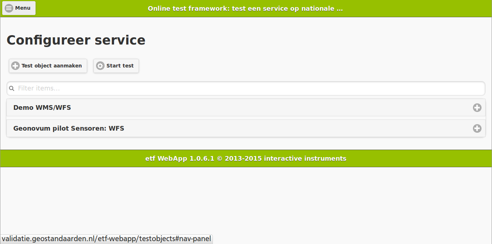
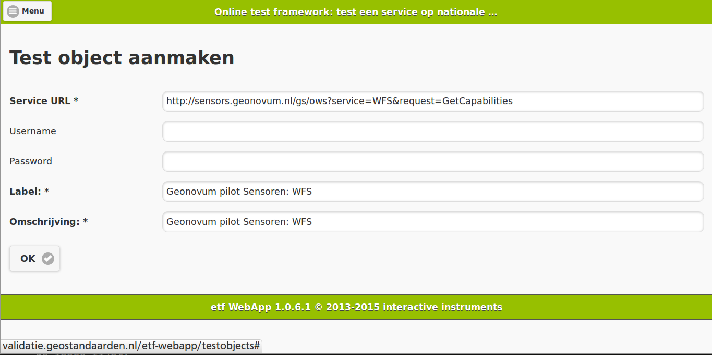
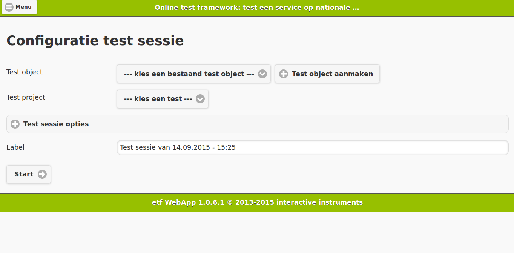
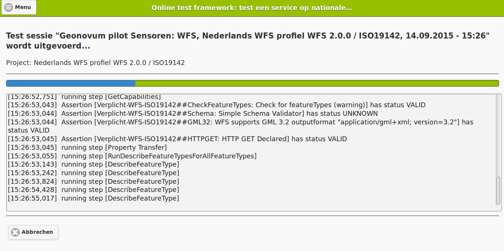
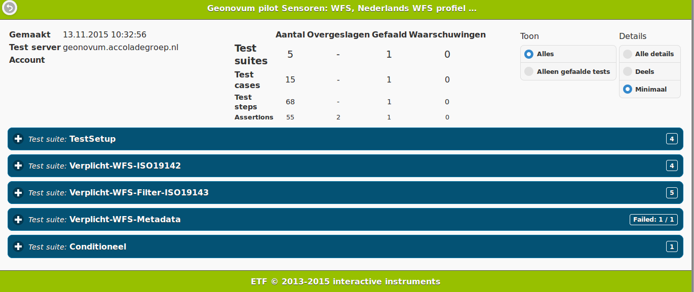

Voor het testen van geo-webservices (als WMS, WFS, Atom) op INSPIRE eisen en Nederlandse profielen, is in Nederland het ETF in gebruik. Er is al enkele jaren een desktop versie van deze test software, die gebruik maakt van SoapUI. Zie de Geonovum website voor meer informatie over het ETF. Inmiddels is er ook een online ETF validator beschikbaar.
De online validator is via http://validatie.geostandaarden.nl/ en http://validatie.geostandaarden.nl/etf-webapp/testobjects te benaderen.
Het testen van een service gaat als volgt:
1) Na het openen van de validator, verschijnt een scherm om een test object (een service) te configureren om zo meteen te gaan testen. Maak een test object aan, als de service niet in de lijst staat. Dit bestaat in ieder geval uit de service URL en een verplichte beschrijving en label voor de service. Optioneel kan een username/password opgegeven worden als de service HTTP Authenticatie vereist. Voor WMS en WFS is de service URL de GetCabilities URL, voor INSPIRE Download Services via Atom feeds is het de Service feed URL. Op dit moment worden de testobjecten standaard opgeslagen in de online validator voor later hergebruik.


2) Start test. Kies de service uit de lijst met bestaande test objecten en kies op welke standaard getest moet worden via de test projecten. Indien gewenst, pas de beschrijving van de test aan en kies Start. Voor sommige tests zijn er nog geavanceerde opties beschikbaar via "Test sessie opties".

3) De test draait. In een scherm is de voortgang en log-informatie te zien. Een test kan enkele minuten duren.

4) Na afronding verschijnt het testrapport. Met per controle informatie over het slagen of falen ervan. Daarin zijn meer en minder details op te vragen, via de opties in de rechterboven hoek.
Een testrapport bevat de resultaten ingedeeld in de volgende hiërarchie / groepering:
Als een Assertion faalt, dan faalt de Test step waarin de Assertion zit, vervolgens de Test case waar de Test step onder valt en daarmee ook de Test suite waar de Test step onderdeel van is.

Via het menu (linksboven) zijn nog andere functies beschikbaar, zoals het raadplegen van oude test rapporten.
Er zijn wat beperkingen, zoals dat test rapporten momenteel altijd blijven bestaan (wel handmatig te verwijderen). Deze beperkingen staan in de issue-lijst.
Op https://vimeo.com/139188974 is een korte demonstratie video te zien van het testen van een service via het online ETF.
Komt u een probleem tegen? Raadpleeg dan de issue-lijst voor de bekende problemen en voeg desgewenst informatie toe. Staat het issue er niet tussen, maak dan via de issue-lijst een nieuw issue aan. Issues en opmerkingen graag in het Nederlands of Engels.